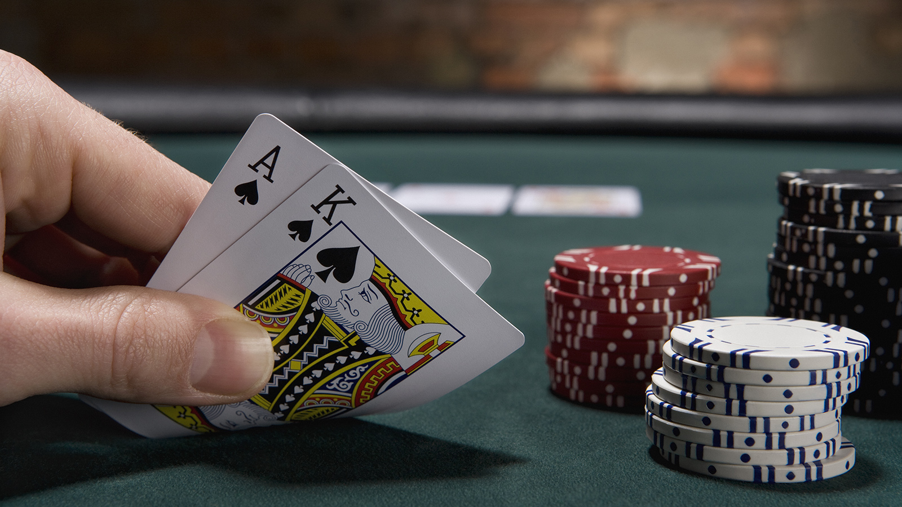

'Saloon' - A Text-Based Game
May 2023
'Saloon' is a simple text-adventure set in an old Saloon in the Wild West. The game involves 4 mini-games; Blackjack, a 'protein calculator', a number guessing game and a joke generator. I wrote 'Saloon' in Python. Below is some information about how I coded Blackjack.
Blackjack features 3 functions. In order to draw random cards from a deck, I initialized a deck with all the different card types, and also initialized two empty lists (one hand for the dealer and one hand for the user) and then used the random module to randomly add two cards to the dealer and users lists from the deck. The 'calculate hand' function uses a for loop that cycles through the items in the user's hand (which is a list) and adds up the total of them and subsequently returns that total which is used in the hit and stand functions. Both the 'hit' and 'stand' functions use global variables so that they can access the variables that aren't available to them in their local scope.
The initial hand is dealt to the player their input is asked for, and using error handling, if the input is not either 'hit' or 'stand' a 'ValueError' is raised and the user is asked to re-enter a valid input. The 'hit' function runs when the user inputs 'hit' after their initial hand (unless their opening hand is blackjack). 'Hit' uses an 'if/elif/else' statement to determine whether the player gets blackjack, busts, or if they get neither of these, then it asks them to 'hit' or 'stand' again. The 'stand' function starts out by revealing the dealers second card (as the dealers opening hand is always obscured in blackjack) and if the dealer has not won (or tied) with his opening hand then it goes into the else statement, and keeps drawing cards while the result of the dealers hand is less than 21 until it either busts, wins, or pushes.
Making a simple text-based adventure game in Python taught me valuable lessons about coding. Firstly, I learned the importance of planning and structuring my code before diving into implementation. By carefully designing the game's flow and organizing it into functions, I achieved better code readability and maintainability. I also gained a deeper understanding of conditional statements and loops, as they were crucial for creating dynamic interactions within the game (especially in Blackjack). Lastly, debugging became a familiar companion throughout the development process. It taught me the significance of thorough testing and the importance of paying attention to detail. Overall, this project allowed me to enhance my problem-solving skills, logical thinking, and grasp of Python syntax, while also igniting my passion for creating interactive experiences through code.